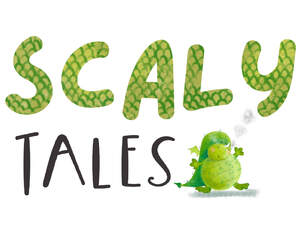

Trade Mark Journal No.2026/007 13 February 2026
UK00004330004 26 January 2026 (9,16,21,24,25,28)

- Class 9
- Phone cases; Mobile phone cases; Mobile telephone cases; Cases for mobile phones; Protective cases for cell phones; Carrying cases for cell phones; Laptop cases.
- Class 16
- Picture books; Books; Drawing books; Sketch books; Story books; Coloring books; Printed books; Non-fiction books; Note books; Sticker books; Autograph books; Colouring books; Baby books [storybooks]; Comic books; Covers for books; Series of non-fiction books; Composition books; Postcards and picture postcards; Fiction books; Check books; Pictures; Writing or drawing books; Birthday books; Flip books; Gift books; Baby books; Books for children; Series of fiction books; Educational books; Address books; Sticker activity books; Coloring books for adults; Scrap books; Activity books; Pop-up books; Books featuring fantasy stories; Books featuring fictional stories; Paper for wrapping books; Greeting cards; Greetings cards; Cards; Pop-up greetings cards; Musical greetings cards; Invitation cards; Paper boxes for storing greeting cards; Christmas cards; Printed cards; Announcement cards [stationery]; Occasion cards; Blank cards; Correspondence cards; Note cards; Picture cards; Announcement cards; Anniversary cards; Motivational cards; Gift wrap cards; Post cards; Menu cards; Giftwrapping paper; Gift-wrapping paper; Gift wrapping paper; Paper gift wrap bows; Paper bows for gift wrap; Gift wrap paper; Paper gift wrap; Christmas gift wrap; Gift paper; Gift wrap; Decorative paper bows for wrapping; Gift cartons; Cardboard gift boxes; Gift tags; Gift wraps; Paper wine gift bags; Wrappers [stationery]; Envelopes [stationery]; Paper stationery; Envelopes for stationery use; Gift bags; Gift boxes; Bottle envelopes of cardboard or paper; Bottle envelopes of paper or cardboard; Paper hangtags; Stickers [stationery]; Kraft paper; Gift cards; Gift boxes made of cardboard; Art pictures; Picture postcards; Stickers; Party stationery; Stationery; Party invitations; Pads of party invitations; Pencil ornaments [stationery]; Stationery boxes; Printed stationery; Paper party bags; Pads [stationery]; Table decorations of paper; Paper gift bags; Paper gift boxes; Gift packaging; Invitations; Printed invitations; Printed paper invitations; Printed cardboard invitations; Birthday cards; Envelopes; Paper party decorations; Printed paper signs featuring names for use for special events; Dinner mats of card.
- Class 21
- Mugs; Cups and mugs; Coffee mugs; Ceramic mugs; Earthenware mugs; Porcelain mugs; Mugs of porcelain; China mugs; Mugs of china; Insulated mugs; Travel mugs; Mugs made of porcelain; Drinkware; Teapots; Coffee cups; Coasters (tableware); Tea cups; Figurines [statuettes] of porcelain, ceramic, earthenware or glass; Ceramic tableware; Tea canisters; Statues of porcelain, earthenware, ceramic or glass; Plastic cups; Sippy cups; Tableware; Cake tins; China figurines.
- Class 24
- Duvet covers; Covers for duvets; Pillow covers; Covers for pillows; Comforters [covers]; Covers for eiderdown and duvets; Bed covers; Covers for cushions; Cushions (Covers for -); Covers for mattresses; Cushion covers; Textile covers for duvets; Valanced bed covers; Quilt covers; Cot covers; Bed covers of paper; Chair covers; Table covers; Bean bag covers; Baby blankets; Textile goods for use as bedding; Textile goods, and substitutes for textile goods; Household textile goods; Fabrics [piece goods]; Textile piece goods for clothing; Sleeping bags for babies; Towels [textile] for use in connection with babies.
- Class 25
- Sleepsuits; Baby layettes for clothing; Maternity sleepwear; Baby bodysuits; Clothing for babies; One-piece clothing for infants and toddlers; Dresses for infants and toddlers; Maternity clothing; Baby doll pyjamas; Bootees (woollen baby shoes); Infant clothing; Socks for infants and toddlers; Maternity leggings; Baby clothes; Clothing for infants; Playsuits [clothing]; Overalls for infants and toddlers; Layettes [clothing]; Plastic baby bibs; Maternity smocks; Infant wear; Maternity wear; Maternity lingerie; Sleepwear; Nappy pants [clothing]; Maternity underwear; Snap crotch shirts for infants and toddlers; Swaddling clothes; Baby pants; Underpants for babies; Headbands [clothing]; Baby tops; Polo shirts; T-shirts; Sleep shirts; Tee-shirts; Shirts and slips; Night shirts; Casual shirts; Baby bibs [not of paper].
- Class 28
- Plush toys; Stuffed and plush toys; Stuffed plush toys; Plush stuffed toys; Soft sculpture plush toys; Smart plush toys; Plush toys with attached comfort blanket; Cuddly toys; Stuffed bean-filled toys; Soft toys; Fluffy toys; Soft sculpture toys; Stuffed toy bears; Stuffed toys; Stuffed dolls; Stuffed toy animals; Soft toys in the form of animals; Stuffed animals [toys]; Squeezable squeaking toys; Inflatable ride-on toys; Stuffed puppets; Inflatable bath toys; Inflatable thin rubber toys; Toy foam hands; Inflatable toys; Toy beanbags [Otedama]; Fabric toys; Bendable toys; Toy dolls; Modeled plastic toy figurines; Ride-on toys; Inflatable toys resembling air vehicles; Pet toys containing catnip; Toy figurines; Snuffle mats being dog toys; Toy furniture; Rocking toys; Plastic toys for use in the bath; Cloth toys; Bendy balls being toys; Baseballs [not soft]; Pet toys; Baby playthings; Toys for babies; Infant toys; Baby rattles; Baby swings.
Mabel Forsyth